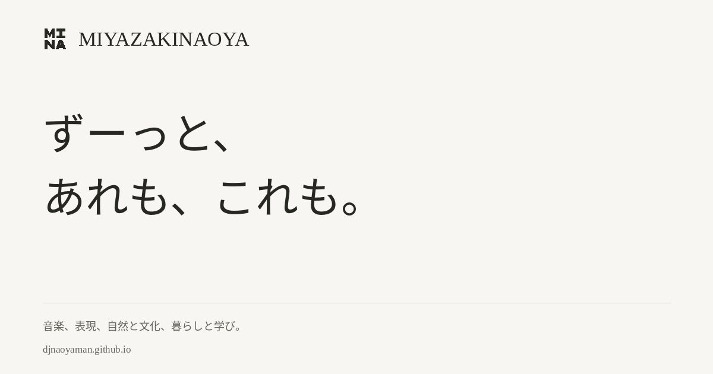
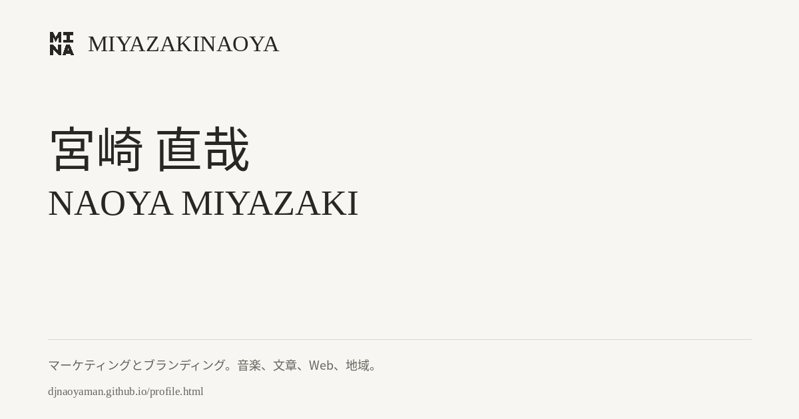
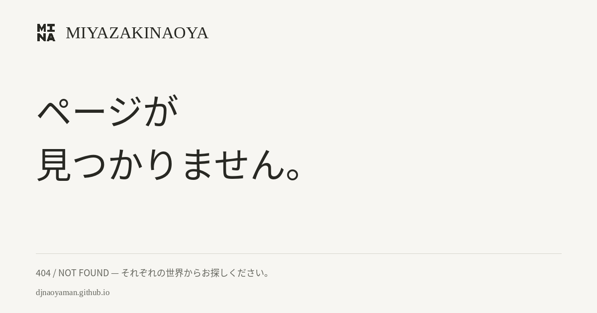

<!doctype html><html lang="ja"><meta charset="utf-8"><meta name="viewport" content="width=device-width,initial-scale=1"><meta name="robots" content="noindex,nofollow"><title>MIYAZAKINAOYA — Identity artwork review</title><style>body{margin:40px;background:#f7f6f2;color:#282823;font-family:serif}main{max-width:1200px;margin:auto}img{display:block;max-width:100%;height:auto;border:1px solid #d7d6ce;margin:24px 0}</style><main><h1>MIYAZAKINAOYA</h1><p>共有画像の制作確認用。生成元は tools/render-share-card.py。</p><h2>Homepage</h2><h2>Profile</h2><h2>404</h2></main></html>